Overview
These tools help you to configure the UV's of the assets you create for CRYENGINE.
A specific Debug View is displayed in the viewport which replaces all of the textures for all of the assets and color codes them according to the number of Texels per Meter they cover (Texel Density).
This is associated with how you lay out your UV maps inside the DCC tool (Max/Maya) and how they are represented in-game. At Crytek we aim to have the majority of our assets fit within the region of 512 Texels per Meter (as was the case with our Crysis 3 and Ryse games). If all of the assets abide by this rule, then they will have a consistent look across the board.
Enabling the Debug Mode
The CVar that enables the Debug View Mode is r_TexelsPerMeter
As mentioned before, 512 is our target range and from here on in 512 is used unless stated otherwise. To enable the Debug Mode in the console type;
r_TexelsPerMeter = 512
You can add any number you like into this CVar, but the number used will be the "target" range. Hence, we are using 512.
To gain easier access to this Debug Mode it is included in the View Modes Toolbar. Three predefined variations, 256, 512 & 1024 are mapped to the buttons as highlighted in the screenshot below. To add the toolbar, right click on an empty space in the UI to bring up the toolbar menu & select ViewModes.
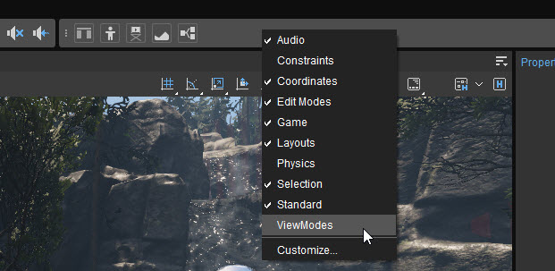
Displaying View Modes toolbar
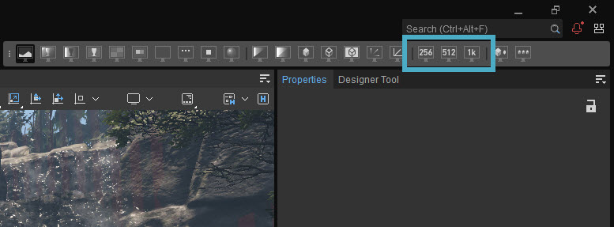
Texels per meter options
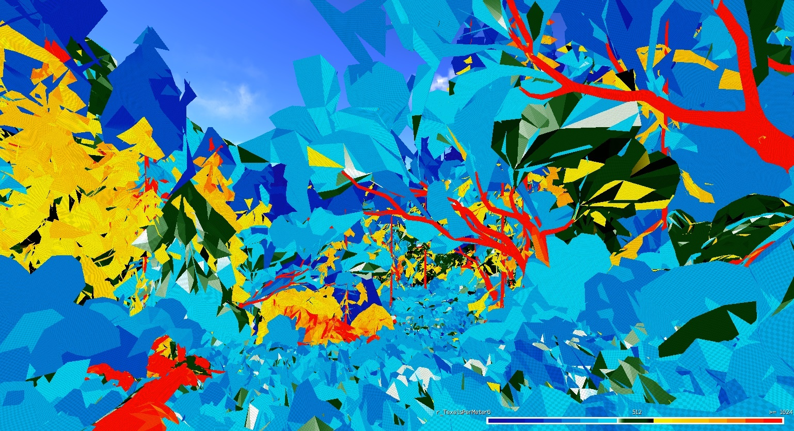
Texels per meter = 512
Do keep an eye on the "range" bar - located in the bottom right of the screen.
Whatever value you have selected in the CVar for e.g. r_TexelsPerMeter = 512, then 512 will be at the center of the range bar.
256: Far left = Zero, far right = 512.
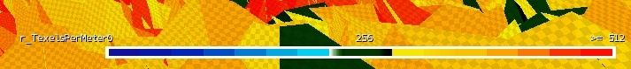
256 tpm bar
512: Far left = Zero, far right = 1024.
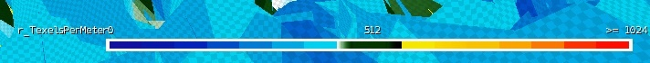
512 tpm bar
1024: Far left = Zero, far right = 2048.
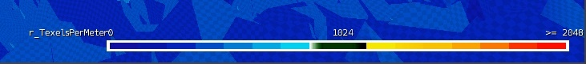
1024 tpm bar
As we have selected 512 as our value, (middle screen shot above) then assets that meet the requirement will be shaded in green.
- Anything that has a lower Texel Density than 512 will shade light blue -> dark blue
- Anything that has a higher Texel Density than 512 will shade from yellow -> orange -> red
- Anything that is green is just right
To help visualize the colors and mapping of the UV's a checkerboard texture is also applied - this also scales to the stretching of the mapping and the higher the density, then the tighter the checkerboard becomes. Notice the high frequency checkerboard in the red area vs the low frequency checkerboard in dark blue area.
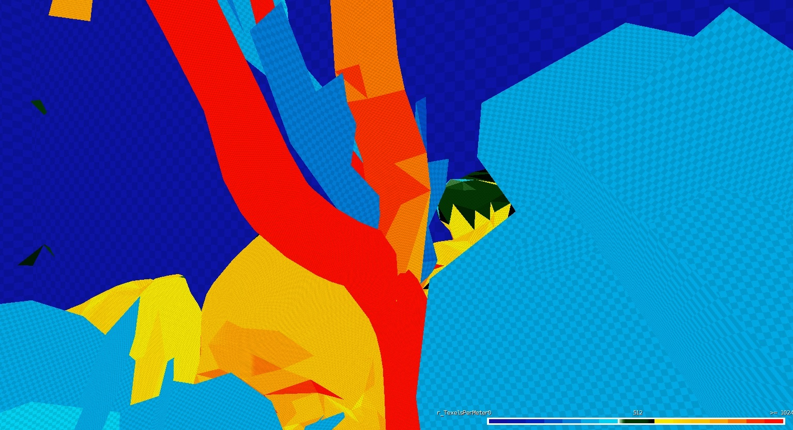
Tpm checkboard scaling
Not all Assets are Created Equal
Background assets such as distant cliffs, forests, buildings etc. i.e. assets that a player will never actually get to (but are features that they can see from a distance) are not worth spending many texels on.
Reasons why;
- You cannot get up close to the asset to inspect the quality of the texturing/materials
- It's a waste of resources
Hero assets on the other hand (main A* characters, cut-scene related assets, vehicles etc.) i.e. assets which are generally up close and in view, are the areas where the Texel Density of the model (s) should be increased.
Example Scenes from Ryse;
World: The further back geometry is from the play area, then the Texel Density requirement becomes less = (Dark Blue). This is shown in the screen shots below by the buildings and trees. However, the Roman Standard (it was classed as an important asset) has a high Texel Density and is colored Red. Some cloth assets and barrels are in the range of yellow to orange, these are close to the play area and therefore required more detail and thus have a higher Texel Density.
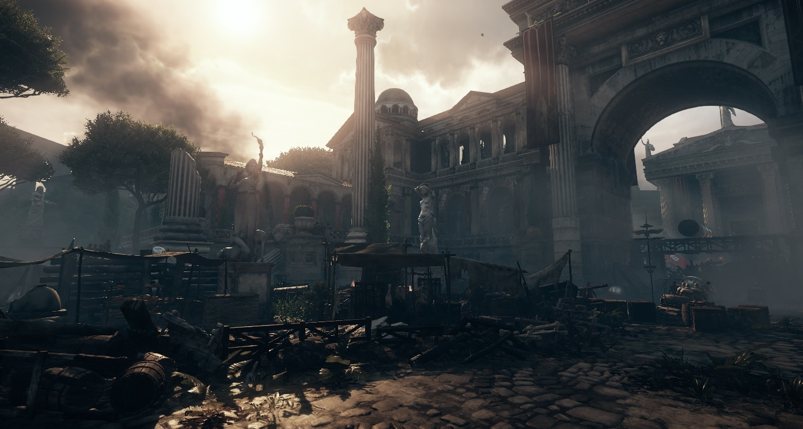
Ryse scene with tpm off
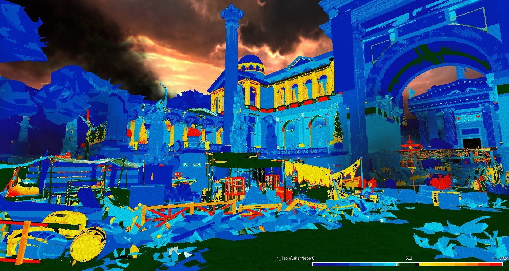
Ryse scene with tpm on
Characters: Texel budget spent on the Roman Soldier vs the generic Civilian. Notice how the shield didn't require as much detail as the Roman armor.
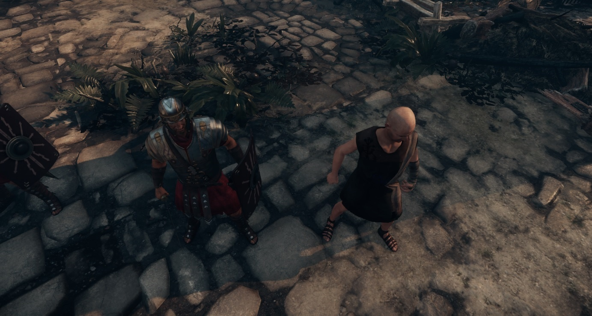
Ryse characters tpm off
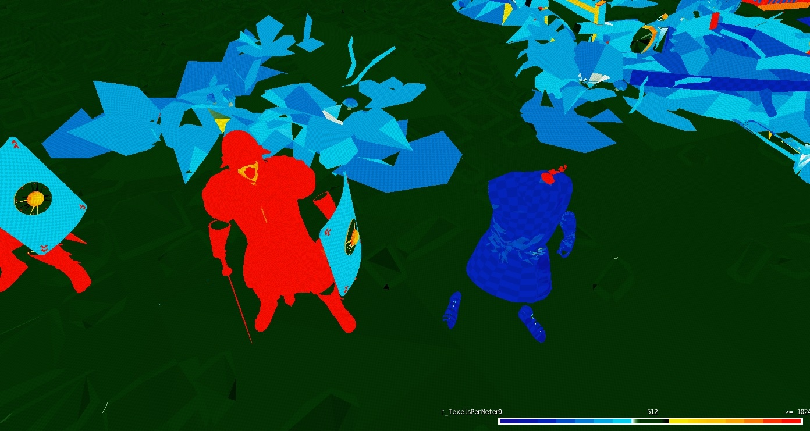
Ryse characters tpm on
Size Matters
Generally an Artist would make an 'object' to the exact scale that the 'object' is designed to be at in the game world. However, for variation within scenes, for example with rocks, trees etc. then the Scale Tool can be used to make slight variations to an 'object' - this breaks up the scene a little bit.
Example:
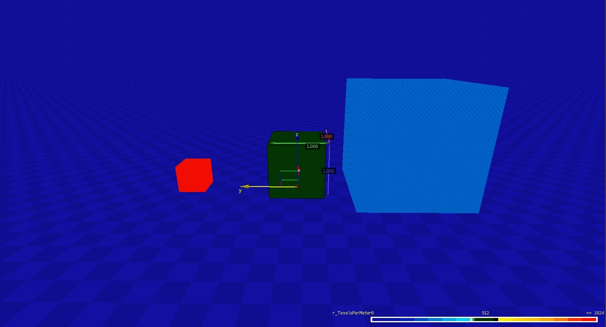
Tpm scaling
In the center of the screen shot above is a 1x1x1 m cube. The cube has the correct UV map setting i.e. using 512 Texels per Meter and is therefore displayed in green.
- The Cube to the left is the exact same object (duplicated) so it has the same UV layout/setting. However, it has been reduced in size by a half (using the Scale Tool) - this has the effect of doubling the Texel Density.
- The Cube to the right is the exact same object (duplicated) so it has the same UV layout/setting. In this case the scale has been increased by 2 and so the Texel Density is now halved.
This can cause issues where objects have been scaled down too much. In this case you have a very detailed texture trying its best to render correctly, but there aren't enough pixels on screen to resolve itself. Hence, Anti Aliasing issues and other artifacts can appear.
Or:
If the object has been scaled up too much then the object will have such a low Texel Density that it will look like a badly created (or low resolution) texture and not what was intended for that objects original purpose. (A scale of 1).
Why Give me 3 Buttons (256, 512 & 1024), if 512 is the Desired Setting?
The 1024 button is there to help you investigate your "Hero" assets.
For example, if your main character has a Texel Density of greater than or equal to 1024, then everything will be displayed in red. Furthermore, should you have gone over the top and given the "Hero's" godly beard so much detail that the Texel Density is 2048 (theoretically) then you need a method to distinguish between the 1024 & 2048 Texel Density's.
Hence, setting r_TexelsPerMeter to 1024 will show all the surfaces mapped with a 1024 Texel Density as green and in this case the legendary beard in red because it has a Texel Density >1024.
Equally, the 256 button is provided for targeting a lower end platform, where the raw horse power isn't there to shove all the pixels around. Hence, you can use the same Debug View to target this range of detail. Also, this helps to investigate the background (not so important) assets where if the range is pushed down to 256, then you have a wider color variation to investigate with.